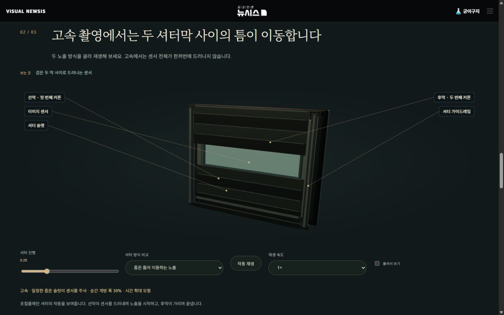
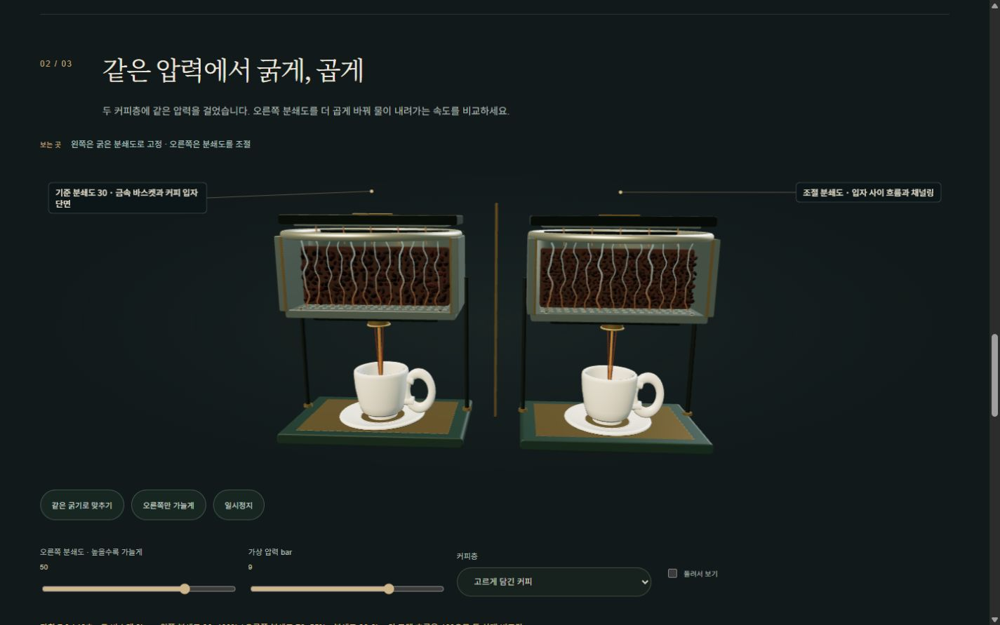

카메라부터 재봉틀까지 10편이 대상입니다. 공개된 기존 소스를 ChatGPT·Claude에 검수 의뢰하고, 카메라와 커피 상세 모형은 ChatGPT에 별도로 제작 의뢰했습니다. Codex가 실제 소스와 대조해 적용 여부를 판단하고 수정본의 기하·상태 관계와 브라우저 화면을 검증했습니다. 두 외부 모델이 수정본을 직접 실행하거나 테스트 통과를 인증한 것은 아닙니다.
검수 대상 커밋: 24cde15, 초기 분쇄도 표시 보정: b1d6bfb. 피아노 파일·랜딩·공용 헤더·배포 설정·공개 일정은 수정하지 않았습니다.
운영 반영 완료: 기존 배포 실행 40417388380의 모든 단계가 성공했습니다. 운영 URL에서 변경 서비스 파일 31개를 받아 CRLF/LF 차이를 정규화한 뒤 대조했으며, 31개 모두 최종 수정본과 일치했습니다. 운영 카메라의 고속 노출 모드·진행 슬라이더를 직접 조작했고, 운영 커피 비교의 초기 분쇄도 표시 70 및 재생도 확인했습니다.
| 편 | 주요 수정 |
|---|---|
| 카메라 | 역방향 경통 수정. 프레임·레일·겹치는 셔터 슬랫과 두 막 사이 실제 개방 틈. 슬랫과 조리개 잎이 실제로 빛을 가리는지 광선 교차 검사. 상세 셔터를 선택할 때 동작 재생. 평판 대신 정물·움직이는 물체의 잔상·상대 노출 비교. |
| 기타 | 줄을 짚은 뒤 남는 비진동 구간 복원. 길이·장력 변경이 표시 진동 속도에도 반영되도록 수정. 상판과 브리지의 변형 방향 정렬. |
| 낚시 릴 | 분해해도 고정축 유지. 손잡이 기어와 로터 피니언의 회전비·회전축 연결. 줄 시작점이 실제 라인롤러를 따라가도록 수정. 감긴 줄만 반지름 변경. 드랙 마찰판 회전을 비대칭 표시로 구분. |
| 손목시계 | 용두를 3시, 스트랩을 12·6시 방향으로 정렬. 상세 탈진부 표시와 회전. 태엽통 리본의 회전을 윤열과 연결. 어셈블리 팔렛 위치 보정. |
| 바이올린 | 선택한 현만 변형되는 진동 추가. 아치형 현 배열에 맞춰 활 높이와 기울기 보정. 활을 이동해도 접촉 높이 유지. 브리지 발과 상판 높이 대조. 활 연구편의 주기 경계 이동을 부드럽게 연결. |
| 영사기 | 필름 경로와 게이트 정렬. 렌즈 광축이 화면 중심을 향하고 화면도 렌즈를 향하도록 수정. 필름 프레임 피치와 퍼포레이션 피치를 정수 관계로 맞춤. 중복된 단계 강조 대상 수정. |
| 기계식 키보드 | 본체 스위치 하우징은 고정하고 키캡만 이동. 스템 캠이 전기 접점 버튼을 관통하지 않도록 경로 분리. 스프링의 고정 끝과 강성별 반발력 화살표 보정. 기존 2mm 접점·4mm 전체 이동 구조 보존. |
| 에스프레소 머신 | 둥근 구슬 대신 각진 입자와 분쇄도별 개수·크기. 입자 사이 연속 물길과 커피색 출구 흐름. 타공 바스켓·하부 출구·내벽과 바닥이 있는 자기 잔·손잡이·받침·액면·크레마. 같은 16초 동안 상대 유량에 따라 수위 누적, 조건 변경 시 재시작. 본체와 추출비 실험에도 새 잔 적용. 분쇄도 초기 표시 50/70 불일치 수정. |
| 축음기 | 20:12 기어 회전비와 배치·축 연결 보정. 태엽 잔량보다 재생 시계가 더 진행하지 않도록 제한. 기존 홈·바늘 접촉·톤암 길이·음향 경로·조속기 구조 유지. |
| 재봉틀 | 실채기 범위를 가이드 위로 보정해 고리 형성 때 실을 풀고 회수 때 당기는 관계 유지. 바늘대가 가이드에서 이탈하지 않도록 생크 연장. 얇은 천의 베벨·두 장 접촉 높이·땀선 노출 보정. 톱니 기준 높이와 마지막 이송 단계 문구 수정. 앞서 고친 수직면 손바퀴 회전 유지. |
로컬 최종 수정본의 실제 브라우저 캡처입니다. 아래 이미지는 시안 합성이 아닙니다.

카메라: 두 막 사이로 센서가 드러납니다.

커피: 흐름과 잔의 수위가 시간에 따라 바뀝니다.
검증 범위: 자동 테스트는 상태·기하 관계를 검증합니다. 전체 실제 기계의 정밀도 인증이나 유체·탄성 해석이 아닙니다. 화면 검사는 PC 브라우저의 viewport 검사이며 실제 iPhone Safari·Android Chrome 기기 검사는 하지 않았습니다. 커피의 16초·수위·흐름은 비교를 위한 개념 표현입니다. 영사기의 차광 연구는 순서를 보여주는 단순화 모형입니다.
축음기의 매 프레임 갱신 누락·크랭크 정수 회전, 바이올린 브리지 초기 위치, 재봉틀 손바퀴 축에 대한 일부 지적은 기존 실제 소스와 대조해 오탐 또는 이미 구현된 내용으로 정정했습니다. 활성화되지 않은 구형 에스프레소 모델의 압력계 지적은 현재 사용 중인 모델에 적용하지 않았습니다. 모든 제안을 일괄 반영하지 않았습니다.
ChatGPT·Claude의 마지막 의미 검수는 새 구현 인증과 구분해 기록했습니다. 기어비가 조속기를 대신한다는 인상을 주지 않기, 정상 침투 경로와 채널링 구분, 설명용 커피 수위와 실제 추출량 구분, 실행 검증을 물리적 정확성 인증처럼 표현하지 않기가 핵심 주의점입니다.
ChatGPT 1차 검수 · Claude 1차 검수 · ChatGPT 보완 검수 · Claude 보완 검수 · ChatGPT 마지막 의미 검수 · Claude 마지막 의미 검수
기존 공개 소스 대조 · 모바일 크기 검사 · 10편 입력 오류 로그 · 배포 후 실제 파일 대조 · 최종 배포 실행
추가 대조한 제조사 자료: Canon 셔터 모드 · La Marzocco 분쇄도와 흐름 · La Marzocco 질량 기준 추출비 · CHERRY MX2A RED